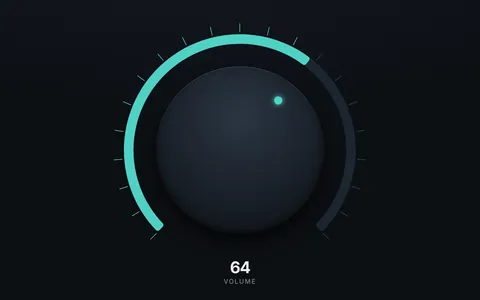
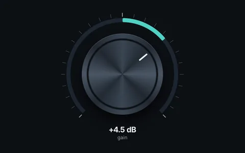
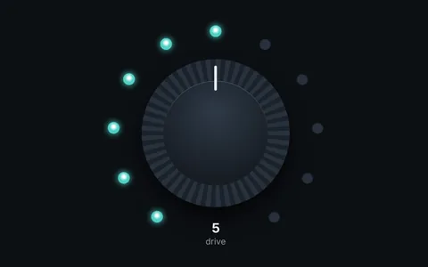

Audio app interfaces
Audio software never gave up the knob. It maps a wide range to a small gesture, and your hand remembers where it was. Orbit gives you the knob, its ticks, its arc and the meters around it as HTML, so the only script you write maps a drag to a value.
Where it fits
- Web audio tools and plugins built on Web Audio or AudioWorklet.
- Synth and effect layouts you want to try with users before building them natively.
- Companion apps for controllers, interfaces and MIDI gear.
- Controls that need to be accessible: a knob is a DOM element, so it can be a
role="slider"witharia-valuenowand arrow keys.
Where it does not
- A large mixer with hundreds of meters moving at audio rate. Draw those on a canvas.
- Photographic knobs. Use an image for the texture and Orbit for the value around it.
Start from

KnobDrag, scroll or use the keys.
Knob with progress barA continuous value with ticks and an arc.
LED knobStepped values, one light per step. 240° gaugeA level meter with zones.
240° gaugeA level meter with zones.
An EQ, for example, is four knobs in a row with their values in the middle, an input and an output meter, and a ring around the bypass button. Build a knob covers drag, wheel and keyboard. The Kit knob has all of it ready.